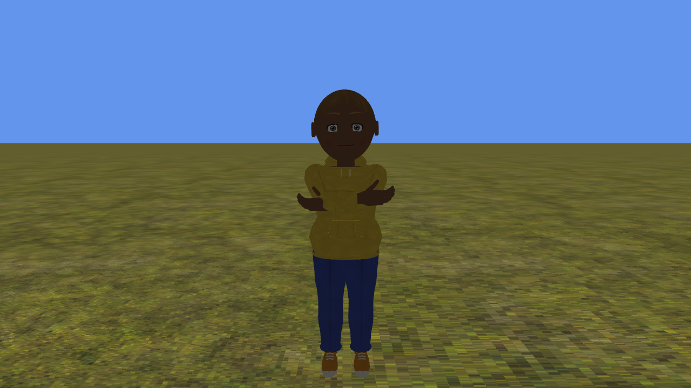

Custom Avatar Animation
Ported from Microsoft's XNA 4.0 Custom Avatar Animation Sample for Xbox 360.
Source for this sample on GitHub ↗

Play ▸Opens in a new tab. Click the game canvas to focus the keyboard. Press E to load a random avatar if none is visible. CNA supplies its own avatars and built-in idles; their appearance and idle timing differ from Xbox avatars. The five custom motions and facial expressions are the original sample data. Keyboard emulation is enabled alongside gamepad input. Documented differences ↗
About this sample
This sample processes avatar FBX animation and expression keyframes through its own Content Pipeline processor. Its player applies the custom bone and facial keys to an avatar, with forward and reverse playback, looping and clamping.
Jump, kick, punch and faint, or walk with the left stick. The camera follows the avatar across the original ground model. Four built-in Stand idles are loaded; the original random selection chooses only the first three. You can create a random avatar or reload the signed-in profile.
Controls
| Action | Keyboard | Gamepad |
|---|---|---|
| Jump / Kick / Punch / Faint | K / L / J / I | A / B / X / Y |
| Move / walk | W / A / S / D | Left stick |
| Signed-in profile avatar | Q | Left shoulder |
| New random avatar | E | Right shoulder |
| Orbit camera | Arrow keys | Right stick |
| Zoom out / in | Z / C | Left / right trigger |
| Reset camera | Right Shift | Right stick click |
| Stop the sample | Escape | Back |